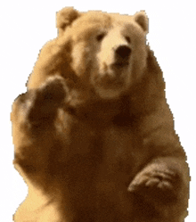
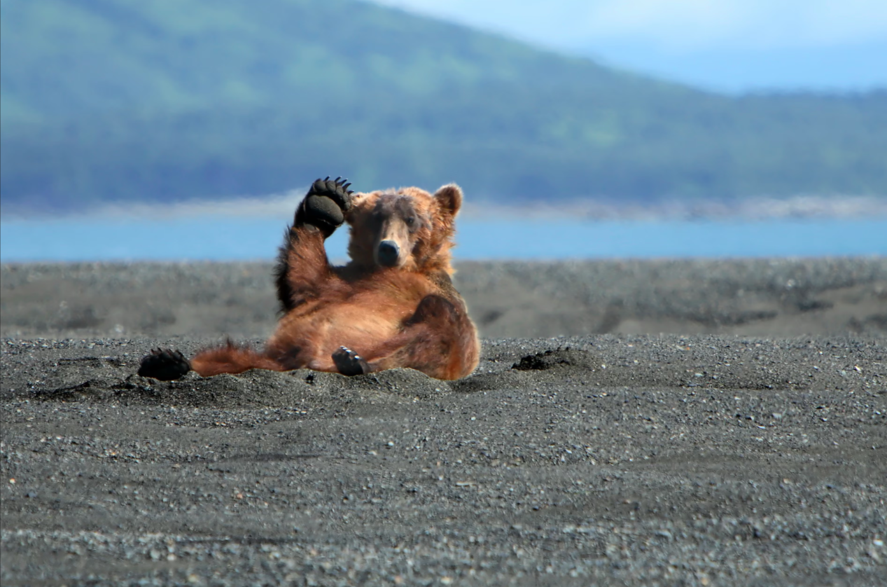
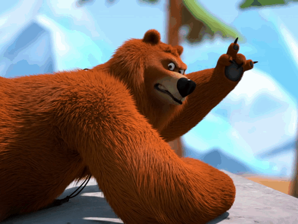
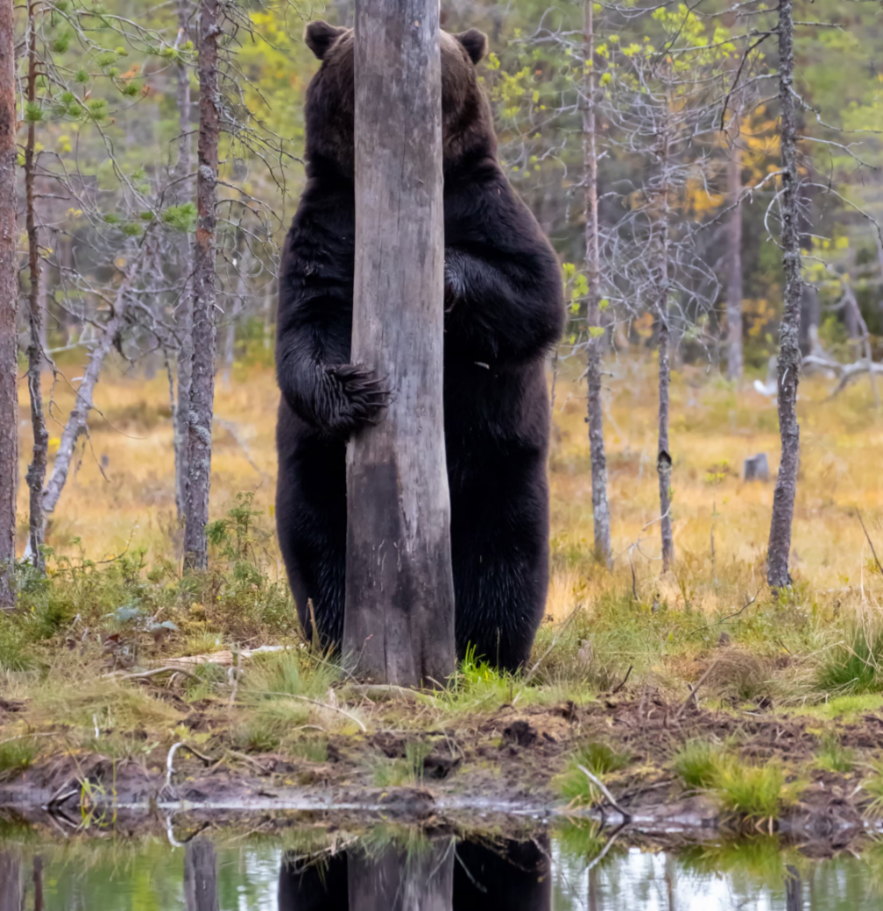

Brown bears living in coastal Alaska gorge on fish in the summer months, building up their fat stores to get them through the hard winter. Amateur photographer Alan Vernon caught this relaxed individual chillaxing on a gravel bar between meals. “Most of the time he laid on his belly,” Vernon said in a post about the photo, “but for a short time he laid on his back and put on this show. I was on the beach with six other people standing about 100 yards away. It was a precious moment.”

Photograph: Alan Vernon/Getty Images

Esa Ringbom has spent more than 30 years photographing large predators in the wilderness of eastern Finland and along the Russian border, like this shy brown bear playing peekaboo behind a tree near Kuhmo. If a photographer sits quietly in a hide, the bears feel comfortable enough to approach at close quarters – sometimes only a metre or so away. “This bear obviously knew I was there, but it didn’t seem to bother it,” he says. In other circumstances, however, “a bear is a shy and cautious animal. We humans have a hard time encountering one in the wild. If they sense something unusual, they hastily make their leave.”

Photograph: Esa Ringbom
Think that was dramatic? There’s more.